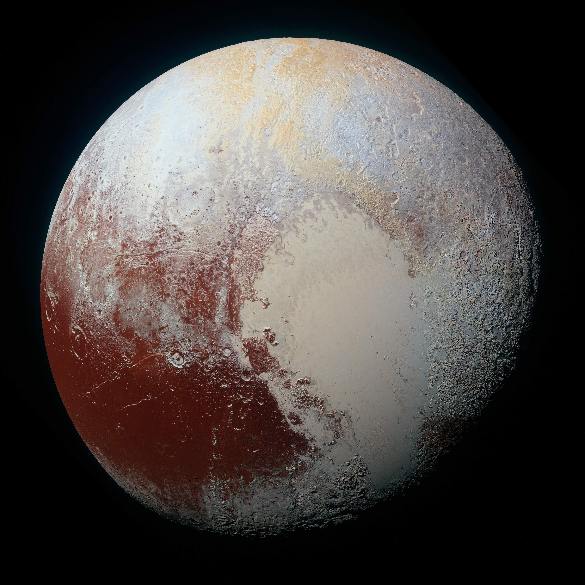
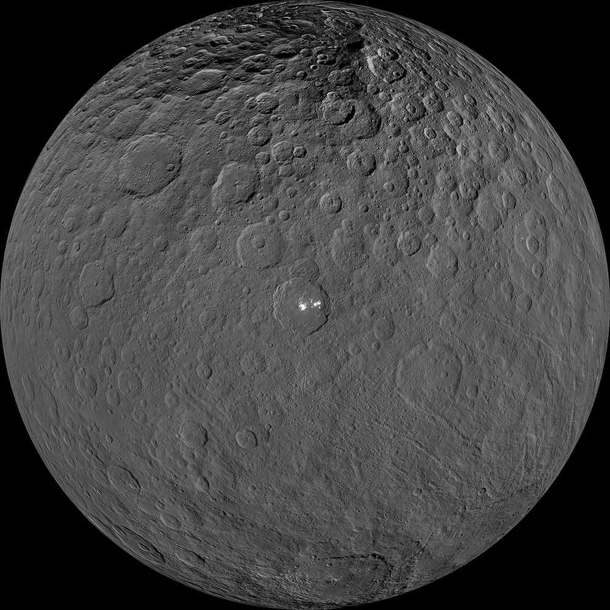
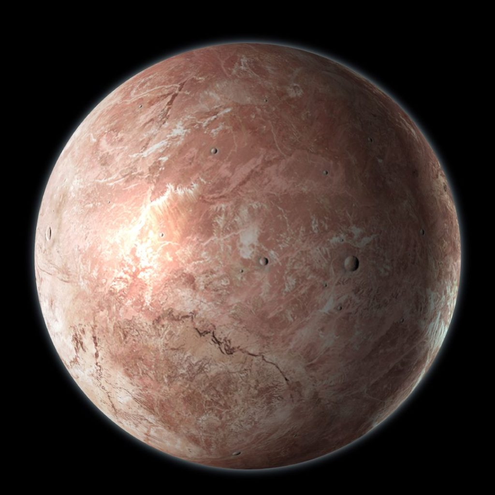
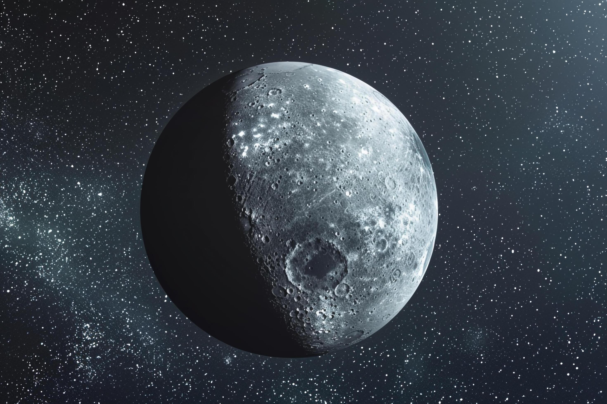
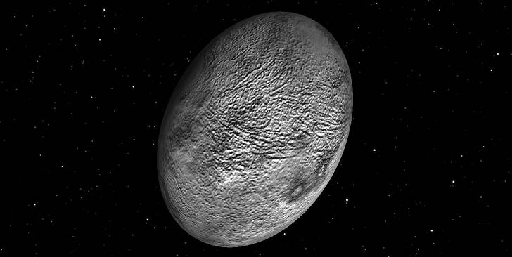

Once considered the ninth planet in our solar system, Pluto is a fascinating world now officially classified as a dwarf planet. It features a famous, sweeping heart-shaped nitrogen glacier named Tombaugh Regio, towering mountains of water ice, a very cold climate, and a surprisingly complex thin atmosphere. It is orbited by five known moons: Charon, Styx, Nix, Kerberos, and Hydra.

Ceres is the largest object in the asteroid belt situated between Mars and Jupiter, making it the only dwarf planet located in the inner solar system. It is a rocky and icy body with a diameter of about 940 kilometers. Scientists have been especially captivated by its mysterious, highly reflective bright salt spots inside craters like Occator, which hint at subsurface salty water reservoirs.

Makemake is one of the largest known dwarf planets residing far out in the icy realm of the Kuiper Belt. It features a distinct reddish-brown surface covered in frozen methane, ethane, and potentially complex organic compounds. Because it orbits far beyond the reach of Neptune, it receives very little sunlight, rendering it an intensely freezing and distant world.

Eris is the most massive known dwarf planet in our solar system, lurking far out in the distant region known as the scattered disc. Its discovery back in 2005 shocked the astronomical community and triggered the major scientific debate that ultimately led to Pluto's reclassification. Covered in a bright, icy frost layer, Eris is accompanied on its massive orbit by its own moon, Dysnomia.

Haumea is one of the most unique and peculiar worlds in the solar system, instantly distinguished by its heavily elongated, egg-like shape. This bizarre distortion is caused by its exceptionally rapid rotation, completing a full spin on its axis in less than four hours—faster than almost any other large body in space. It also boasts a faint ring system and two known moons, Hiʻiaka and Namaka.
